Web je již jen v režimu pro čtení a není možné přidávat nové komentáře nebo dotazy do fóra. Díky za přízeň.
Main menu
You are here
Kompletní průvodce tvorbou userbaru
14. March 2010 - 18:54 — Lukáš
Takzvaný „userbar“ se používá v diskusních fórech. Userbar je tenký proužek vyjadřující váš názor.
Na pozadí většiny userbarů se obvykle nachází šikmé čárkování, ještě před samotnou tvorbou tedy musíme vytvořit právě tento vzorek pro Gimp.
- Otevřeme tedy Gimp a vytvoříme nový (průhledný) obrázek s rozměry 5×5px
- Zvolíme nástroj tužka a nastavíme stopu Circle (01)
- Nakreslíme čáru z horního levého do spodního pravého rohu
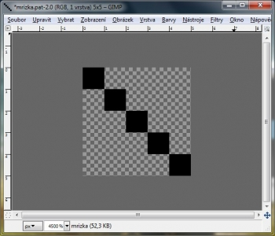 - Klepneme na Soubor → Uložit. Vzorek pojmenujeme jako „mrizka.pat“(pattern - vzorek). Umístíme jej na plochu.
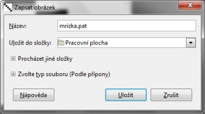 - Ke vzorku můžeme přiřadit komentář. Klepneme na Uložit
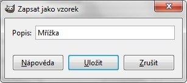 - Vzorky se obvykle načítají z:
C:\Users\<uživatelské jméno>\.gimp-2.6\patterns – Windows Vista/7
C:\Documents and Settings\<uživatelské jméno>\.gimp-2.6\patterns – XP bude tedy nejjednodušší nakopírovat vzorek tam. - V okně „Vzorky“ klepneme na „Aktualizovat vzorky“
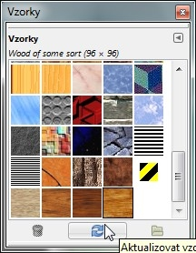 - Náš vzorek by se měl v Gimpu objevit
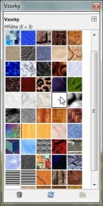 - Gimp vypneme
{kind=link}
{kind=link}
{kind=link}
{kind=link}
{kind=link}
Při tvorbě userbarů se používá speciální písmo Visitor, které není obsaženo ve Windows. Musíme jej tedy stáhnout odsud.
Přejdeme na:
Ovládací panely\Vzhled a přizpůsobení\Písma – (Windows Vista/7) a na:
Ovládací panely\Písma ve Windows XP. Sem překopírujeme všechny soubory písma Visitor. (VISITOR, visitor1, visitor2).
Nyní jíž můžeme přejít k samotné tvorbě. Gimp se možná bude načítat dlouho, to je způsobeno přidáním nových písem, mějte proto strpení.
- Vytvoříme nový obrázek s rozměry 350×19px
- Vybereme si dvě libovolné barvy
- Nástrojem přechod vyplníme plátno
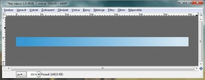 - Vytvoříme novou vrstvu.
- Vybereme nástroj Plechovka, typ vyplňování nastavíme na „Vyplňovat vzorkem“ a vybereme naši mřížku.
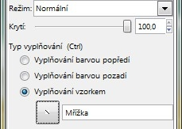 - Vyplníne vrstvu. Její krytí nastavíme na cca 30%
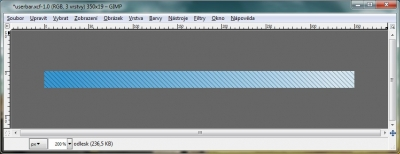 - Vytvoříme novou vrstvu s názvem „odlesk“
- Nástrojem kruhový výběr vybereme horní polovinu obrázku
- Výběr vyplníme bílou barvou a krytí nastavíme opět na cca 30%
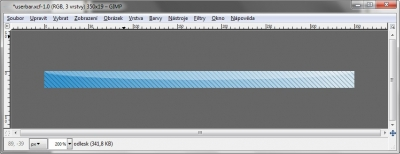 - Nyní přidáme libovolnou ikonku
- Vrstvu s ikonou umístíme POD vrstvu odlesk. Pokud je kolem ikony bílá barva přejdeme na Barvy → Barva do alfy.
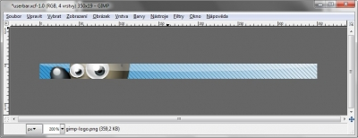 - Napíšeme nějáký text a umístíme na pravou stranu obrázku. Musíme použít písmo Visitor TT1 BRK bílé barvy velikosti 10 s vypnutým vyhlazováním.
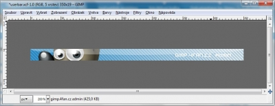 - Klepneme na vrstvu s textem pravým tlačítkem a zvolíme „Velikost vrstvy dle obrázku“ a „Alfa do výběru“
- Klepneme na Vybrat → Zvětšit. Zvětšíme o 1px
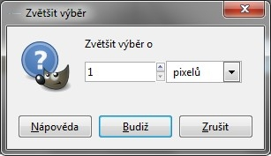 - Výběr vyplníme černou barvou
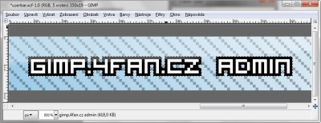 - Vytvoříme novou vrstvu s názvem „obrys“. Klepneme na Vybrat → Vše, Vybrat → Obvod. Vybereme 1px
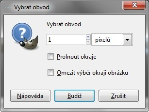 - Výběr vyplníme černou.
- Ujistěte se, že vrstvy jsou ve správném pořadí
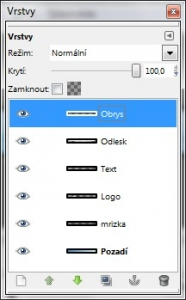 - Hotovo
{kind=link}
{kind=link}
{kind=link}
{kind=link}
{kind=link}
{kind=link}
{kind=link}
{kind=link}
{kind=link}
{kind=link}
{kind=link}
Kategorie:
Web je již ukončen. Nebude zde přibývat žádný nový obsah. Případné dotazy prosím na l.bacovsky(a)outlook.cz
Comments
Pochlubte se
obrázok
Re: obrázok
Nice article! Everything is
Chvála
problem
Máš označenou správnou
ano cky skusim ete raz
ano mam a ked dam barvy do
Podle toho, která barva má z
obrázok
Máš špatně poskládané vrstvy,
Zkusil jsem
Ahoj, pěkný userbar
muj prvni
Test ! :-)
Pěkné userbary s netradičním
userbary
Otázka
Re: Otázka
Re: moje tvorba
Re: moje tvorba
Re: moje tvorba
Re: moje tvorba
Re: Kompletní průvodce tvorbou userbaru
Můj usebar
Moje userbary
Re: Kompletní průvodce tvorbou userbaru
Re: Kompletní průvodce tvorbou userbaru
Re: Kompletní průvodce tvorbou userbaru
Re: Kompletní průvodce tvorbou userbaru
Re: Kompletní průvodce tvorbou userbaru
Re: Kompletní průvodce tvorbou userbaru
Nejde mřížka
Nezobrazu je se tam
Nezobrazuje se tam :-(
Re: rozměr
Re: rozměr
Re: rozměr
Re: Neide mi to
Re: Kompletní průvodce tvorbou userbaru
Add new comment